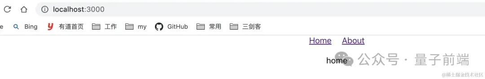
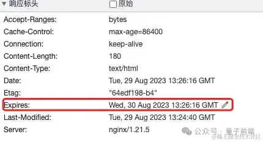

Nginx 是在前端服务部署时是很重要的一部分，也是部署的基础，学会了通过 Nginx 部署前端资源，才能继续后续的一系列进阶。
本节内容作为基础知识，如果熟悉 Nginx 可以略过，如果不熟悉可以实际操作一下。
现在服务器安装 Nginx 很简单，一般只需要两行命令即可，安装完成后，启动服务。
# 安装nginx
yum install -y nginx
# 启动nginx
systemctl start nginx
# 查看nginx运行状态
systemctl status nginx
当我们看到下图，说明你的 Nginx 运行正常，此时 Nginx 会启动服务，默认 80 端口。此时如果我们的服务器外网防火墙80端口开启，那么访问外网 IP，就能看到 Nginx 启动的服务
Nginx 的配置文件，一般位于/etc/nginx目录下，具体内容如下：
我们基本只需要关注文件nginx.conf和conf.d目录，下面是一份nginx.conf配置文件，不懂也不要怕，基本都不需要改动，默认 80 服务已经开启了。
user nginx; # nginx进行运行的用户
error_log /var/log/nginx/error.log; # 错误日志
http {
log_format main ...; # nginx日志格式
access_log /var/log/nginx/access.log main; # 日志位置
# 引入的nginx配置文件，可以将server放在该目录下，方便管理
include /etc/nginx/conf.d/*.conf;
# 一个nginx服务一个server
server {
listen 80; # 服务启动的端口
server_name _; # 服务域名或IP
root /usr/share/nginx/html; # 服务指向的文件地址
error_page 404 /404.html; # 找不到资源重定向到404页面
location = /40x.html {};
error_page 500 502 503 504 /50x.html; # 系统错误重定向50x页面
location = /50x.html {};
}
# server {
# listen 443; # 支持https协议
# server_name _;
# root /usr/share/nginx/html;
# ...
# }
}
我们可以看到该文件分成了多层
在 http 下可以有多个Server，启动多个服务，但如果都写在一个文件里面，文件就越来越大了，那么为了便于管理多个服务，我们要对nginx.conf进行拆分。
conf.d 目录下一般是空的，我们新建文件 web.conf 或者任意命名的以.conf 结尾的文件即可被 Nginx 使用，内容为：
server {
listen 80;
server_name _;
root /usr/share/nginx/html;
error_page 404 /404.html;
location = /40x.html {};
error_page 500 502 503 504 /50x.html;
location = /50x.html {};
}
由于这里使用了 80 端口，之前 nginx.conf 文件 server 中 listen 为 80 的可以删除了。
此时 nginx.conf 中的文件内容为：
user nginx; # nginx进行运行的用户
error_log /var/log/nginx/error.log; # 错误日志
http {
log_format main ...; # nginx日志格式
access_log /var/log/nginx/access.log main; # 日志位置
# 引入的nginx配置文件，可以将server放在该目录下，方便管理
include /etc/nginx/conf.d/*.conf;
}
include /etc/nginx/conf.d/*.conf; 我们看到这一行语句发现，include 帮助我们引用 conf.d 下以.conf 结尾的配置文件。
完成后执行 nginx 指令
# 检查nginx配置文件是否正确，如果错误会提示具体的错误信息
nginx -t
# 重新启动nginx服务
nginx -s reload
观察日志，此时发现 Nginx 就重新启动了，读取的是新的配置文件。
其他操作 nginx 的指令
nginx -s stop
nginx -s start
/data/web两个 html 文件index.html, about.htmlindex.html或about.html<!DOCTYPE html>
<html>
<head>
<meta charset="utf-8" />
<title>nginx</title>
</head>
<body>
通过nginx部署的第一个服务
</body>
</html>
/etc/nginx/conf.d/web.confserver {
listen 80;
server_name localhost;
root /data/web;
index index.html;
}
执行nginx -t确认配置文件修改没问题，再执行nginx -s reload重启 Nginx，此时我们访问外网 IP（默认 80 端口，下面默认都是访问 80 端口），可以看到
这样我们的静态资源文件就部署好了，通过 url 访问资源
http://xxxx/index.htmlhttp://xxxx/about.html我们快速创建一个 CRA 单页面应用，修改 App.js 文件，这里使用react-router-dom@6
import { HashRouter, Routes, Route, Link } from "react-router-dom";
import "./App.css";
function App() {
return (
<div className="App">
<HashRouter basename="/">
<div style={{ marginBottom: 20 }}>
<Link style={{ marginRight: 20 }} to="/">
Home
</Link>
<Link to="/about">About</Link>
</div>
<Routes>
<Route path="/" element={<div>home</div>}></Route>
<Route path="/about" element={<div>about</div>} />
</Routes>
</HashRouter>
</div>
);
}
export default App;
我们执行yarn build，然后将build目录下的文件迁移到/data/web下，再访问服务器 IP，发现访问正常，路由切换也没有问题，即部署成功。
import {
BrowserRouter,
// ...
} from "react-router-dom";
将 Hash 模式中的代码修改为 BrowserRouter，运行本地项目，路由切换正常，该路由是 History 模式
同样执行yarn build生成build目录，将该目录下的文件迁移到上一步服务器的目录/data/web 下，然后访问外网 IP，发现渲染效果和上图一样，但是当我们点击 About 页面，然后刷新浏览器发现，出现了 404。
先说解决办法，然后解释下原因，修改 Nginx 配置web.conf
增加一行 try_files 配置，当请求的地址找不到时，重新指向 index.html 文件
server {
listen 80;
server_name localhost;
root /data/www/;
location / {
try_files $uri $uri/ /index.html;
index index.html;
}
}
重启 nginx nginx -t、nginx -s reload 再次刷新页面，发现页面访问正常了，切换也没有问题。
了解下这两种模式的区别就知道答案了
Hash 模式
在 hash 路由模式下，URL 中的 Hash 值（#后面的部分）用来表示应用的状态或路由信息。当用户切换路由时，只有 Hash 部分发生变化，并没有向服务器发出请求，就做到了浏览器对于页面路由的管理。
Hash 模式下，URL 和路由路径由#号分隔：http://example.com/#/about?query=abc
当#后面的路径发生变化时，会触发浏览器的 hashchange 事件，通过 hashchange 事件监听到路由路径的变化，从而导航到不同的路由页面。
Hash 模式#后面的路径并不会作为 URL 出现在网络请求中。例如对于输入的 example.com/#/about[1] ，实际上请求的 URL 是 example.com/[2] ，所以不管输入的 Hash 路由路径是什么，实际网络请求的都是主域名或IP:Port
History 模式
History 路由模式下，调用浏览器 HTML5 中historyAPI 来管理导航。URL 和路径是连接在一起的，路由的路径包含在请求的 URL 里面，路由路径作为 URL 的一部分一起发送。
History 模式下，URL 路由格式为：http://example.com/about&query=abc
当我们向服务器发出请求时，服务器会请求对应的路径的资源
综上，当我们打开入口文件 index.html 的路径时，切换 url 此时是本地路由，访问正常，但是当我们处于非入口页面时，刷新浏览器，此时发出请求，由于服务器就找不到资源路径了，变成了 404。
而对于 Hash 模式来说，总是请求的根路径，所以不会出现这种情况。
反向代理的用途很多，这里我们看一个常用的，代理请求的接口。我们在发布时前端的域名和后端 api 服务的域名经常不一致，此时就可以使用 Nginx 配置反向代理来解决这个问题。
server {
location /api {
proxy_pass http://backend1.example.com;
proxy_set_header Host $host;
proxy_set_header X-Real-IP $remote_addr;
proxy_set_header X-Forwarded-For $proxy_add_x_forwarded_for;
}
}
代理的时候要注意添加必要的参数，帮助后端获取一些客户端的请求数据
proxy_set_header Host $host; ：客户端请求的主机名（Host），不加的话，后端无法获取主机名信息proxy_set_header X-Real-IP $remote_addr;：用户的真实 IP(X-Real-IP)，如果不设置，后端只能拿到代理服务器的 IPproxy_set_header X-Forwarded-For $proxy_add_x_forwarded_for;代理链路，如果用户中间经过了多个代理服务器，如果不加这个参数，那么后端服务将无法获取用户的真实来源Nginx 可以作为负载均衡服务器使用，通过配置 upstream 来分发流量，同时可以配置一些参数：
upstream api {
ip_hash;
server backend1.example.com;
server backend2.example.com;
# server backend1.example.com weight=5;
}
server {
location /api {
proxy_pass http://api;
proxy_set_header Host $host;
proxy_set_header X-Real-IP $remote_addr;
proxy_set_header X-Forwarded-For $proxy_add_x_forwarded_for;
}
}
Nginx 日志也是很重要的一个内容，在我们请求资源出现问题时，要排查请求的资源是否到达 Nginx，而且请求日志可以记录很多有用的信息。
log_format gzip '$remote_addr - $remote_user [$time_local] '
: '"$request" $status $bytes_sent '
: '"$http_referer" "$http_user_agent" "$gzip_ratio"';
access_log /var/logs/nginx-access.log gzip buffer=32k;
nginx 日志主要涉及access_log，log_format
log_format: 日志格式，通过 nginx 内置的变量来读取和排列，通常默认即可access_log: 日志输出的地址、是否压缩、buffer 是否当日志大于 32k 后吸入磁盘作为前端性能优化的一种方式，Gzip 是简单且有效的，尽管目前前端对于静态资源会进行压缩，但 Gzip 依然可以在网络传输过程中对文件进行压缩
下面这些字段可以放在http、server、location指令模块
http {
# 开启关闭
gzip on;
# 压缩的文件类型
gzip_types text/plain text/css application/javascript;
# 过小的文件没必要压缩
gzip_min_length 1000; # 单位Byte
gzip_comp_level 5; # 压缩比，默认1，范围时1-9，值越大压缩比最大，但处理最慢，所以设置5左右比较合理。
}
允许客户端请求在 http 请求中添加以下划线格式命名的参数
该字段可以放在http指令模块
http {
underscores_in_headers on;
}
允许客户端上传文件最大不超过 1M，在开发上传接口时一定要注意，否则导致上传失败
该字段可以放在http、server、location指令模块
http {
client_max_body_size 1m;
}
缓存也是前端优化的一个重点，合理的缓存可以提高用户访问速度
该字段可以放在http、server、location指令模块
配置浏览器缓存的有三个地方:
1. 后端服务，配置请求头
后端根据语言不同，配置关键字段即可
2. 代理服务器（Nginx）配置缓存请求头
location /static {
# /static匹配到的资源有效期设置为1d;
expires 1d;
# /设置资源有效期为一周;
# expires max-age=604800;
# 设置浏览器可以被缓存，设置7天后资源过期
add_header Cache-Control "public, max-age=604800";
# 阻止浏览器缓存动态内容
# add_header Cache-Control "no-cache, no-store, must-revalidate";
# 禁用浏览器缓存
# add_header Cache-Control "no-store, private, max-age=0";
}
我们发现响应头的过期时间更新了
3. 在前端资源中通过 meta 声明缓存信息
<meta
http-equiv="Cache-Control"
content="no-cache, no-store, must-revalidate"
/>
<meta http-equiv="Expires" content="0" />
通过反向代理，已经处理了请求域名和端口不一致的跨域问题，但有局限性。Nginx 有专门方法配置请求资源的跨域
该字段可以放在server、location指令模块，通过配置头部字段，做跨域处理
server {
location / {
# 允许所有来源的跨域请求
add_header Access-Control-Allow-Origin *;
# 允许特定的HTTP方法（GET、POST等）
add_header Access-Control-Allow-Methods "GET, POST, OPTIONS, PUT, DELETE";
# 允许特定的HTTP请求头字段
add_header Access-Control-Allow-Headers "Origin, X-Requested-With, Content-Type, Accept";
# 响应预检请求的最大时间
add_header Access-Control-Max-Age 3600;
# 允许携带身份凭证（如Cookie）
add_header Access-Control-Allow-Credentials true;
# 处理 OPTIONS 预检请求
if ($request_method = 'OPTIONS') {
add_header Access-Control-Allow-Methods "GET, POST, OPTIONS, PUT, DELETE";
add_header Access-Control-Allow-Headers "Origin, X-Requested-With, Content-Type, Accept";
add_header Access-Control-Max-Age 3600;
add_header Access-Control-Allow-Credentials true;
add_header Content-Length 0;
add_header Content-Type text/plain;
return 204;
}
}
}